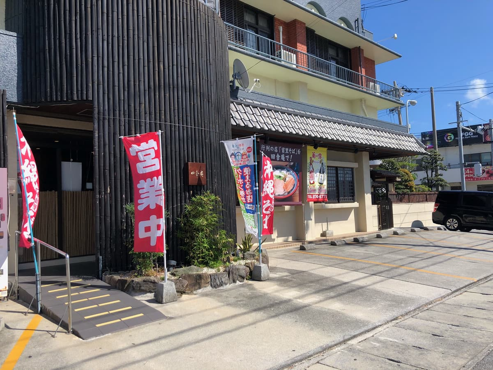
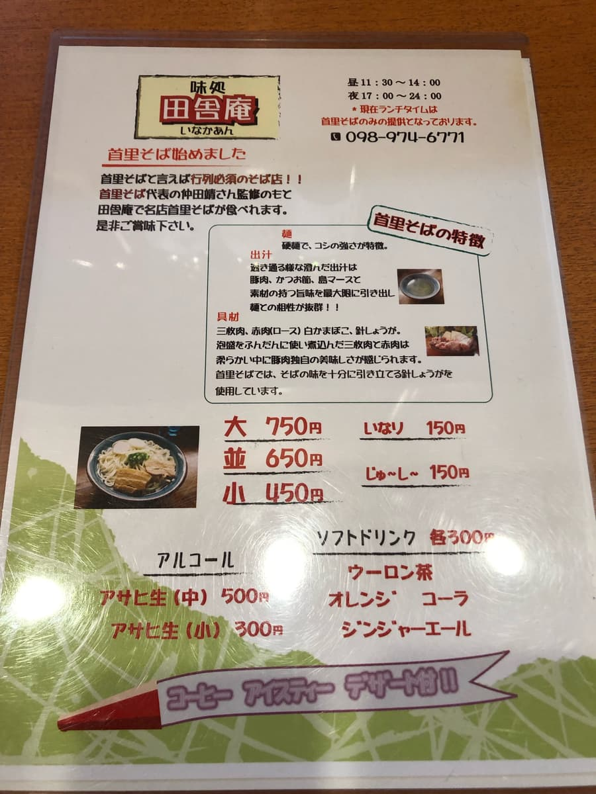
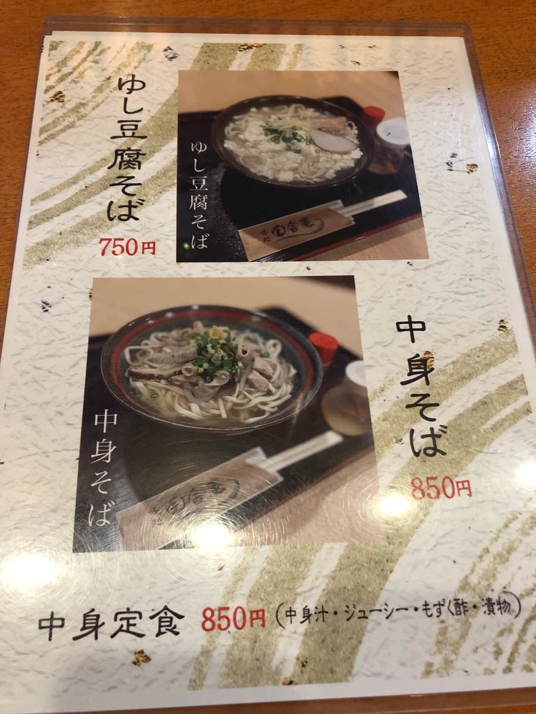
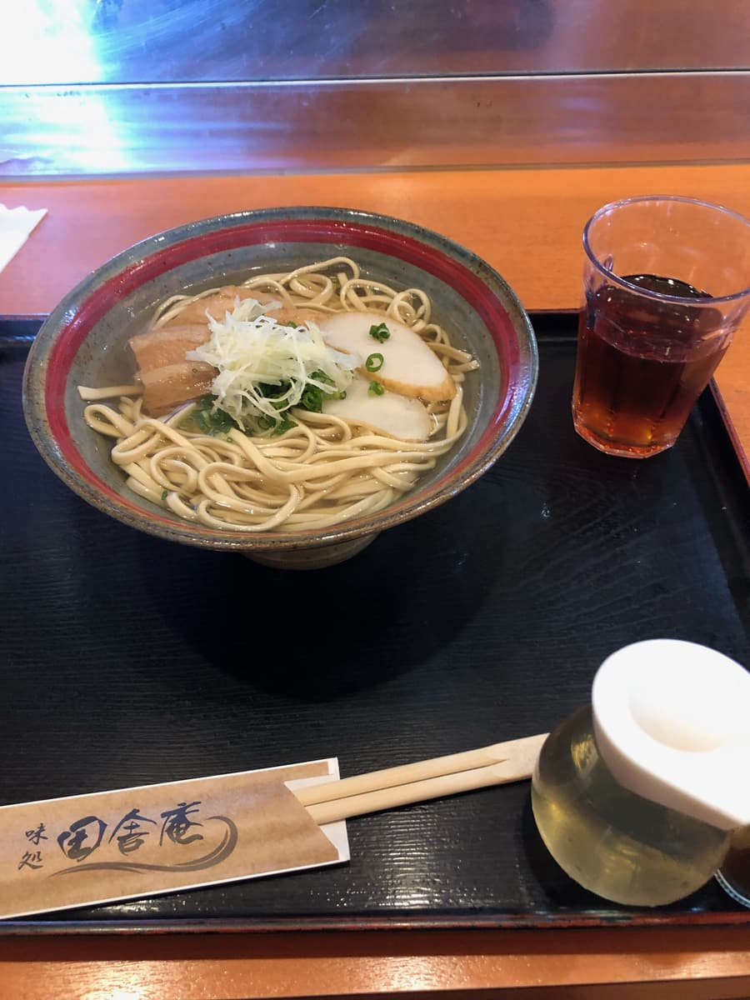
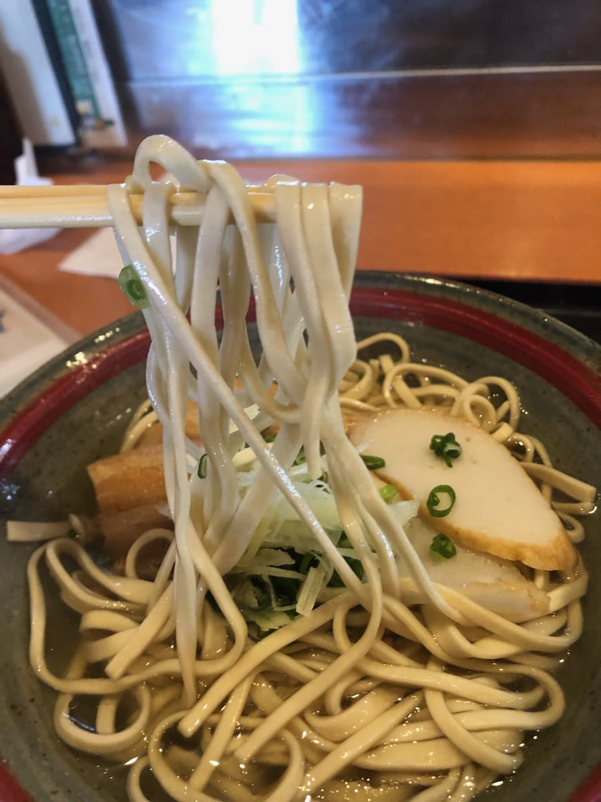

2023年11月吃的。这家店是「第13届冲绳面集章活动（2023.10.1～2024.2.29）」的参加店，是我去的第13家／共34家😊

集章手册上介绍的菜单是「首里面」，我心想「为什么在宇流麻市会有首里（那霸市）面？」而来，看了菜单后就明白了😁

这家店似乎是受到那霸市首里「首里面」店主的监修，提供首里面。原来如此，难怪是「首里面」呢😊
其他似乎还有「冲绳嫩豆腐面」和「猪内脏面」，不过店员说「冲绳嫩豆腐面卖完了」，可见「冲绳嫩豆腐面」可能也很受欢迎。这次点了「首里面 普通」。


外观完全就是我之前吃过的首里面的「首里面」呢😁
之前吃本家的首里面时，汤头是相当清爽温和的味道，不知道这里如何，一边想着一边喝了一口汤。
完全就是那霸市首里「首里面」的汤头，透明感十足、相当清淡温和的感觉。我在之前的部落格也写过，我个人觉得味道相当淡，比较喜欢味道、高汤更突出的汤头(;^ω^)

接着吃面。面条是直面，稍微偏硬。配料的红肉（里肌）还留有筋感，不过三层肉很软、很好吃。
评分（8.5分/15分）：我觉得完全重现了首里面的首里面。「首里面」总是大排长龙、很拥挤，所以如果有机会到宇流麻市，推荐来这家田舍庵绿町店品尝首里面。不过味道相当淡。饭后还附赠红芋布丁。
面：★★★☆☆（3）
汤头：★★✬☆☆（2.5）
配料：★★★☆☆（3）